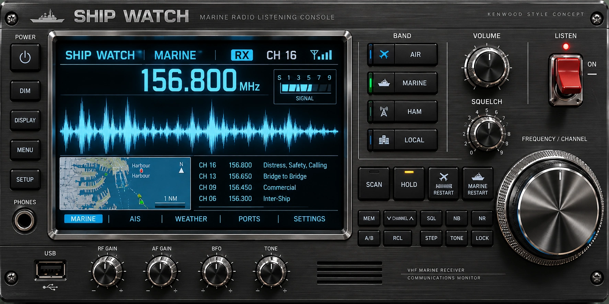

SHIP AIR WATCHAIR & MARINE
LISTENING CONSOLE
LISTENING CONSOLE
156.800
MHz
TAP LISTEN
Activate Ship Watch Pro
Enter the license key provided after your payment is confirmed. Activation will apply to this receiver installation.
Online activation is not connected in this preview. The key will not be checked or saved.
NEW BRUNSWICK / FUNDY · GOES-19
 SAINT JOHN HARBOUR · 45.255°N 66.060°W
SAINT JOHN HARBOUR · 45.255°N 66.060°W30%
5
OFF
CLICK ME
https://atlanticlink.ca